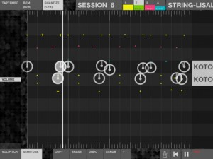
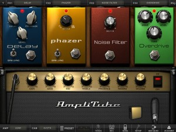
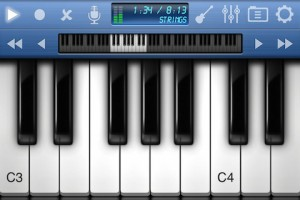
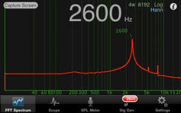
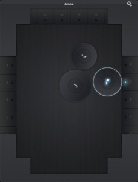
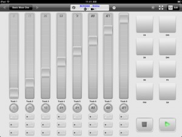
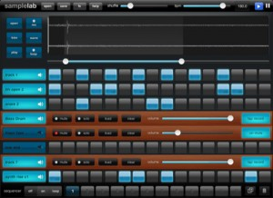
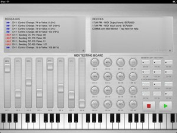
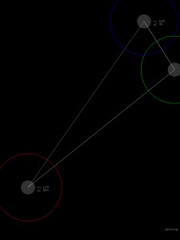
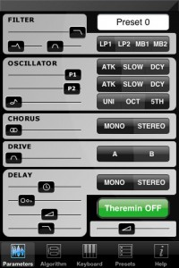

Posted by Mikers On December - 26 - 2010ADD COMMENTS
Audioprom is an audio sequencer and live performance application for the iPad.
Watch some demo videos at audioprom.cwandt.com
Audioprom was originally called Sausage Sequencer. The idea was to build a sound sequencer that uses slices of sausages placed on the iPad as physical markers to make sounds. After our first prototype we realized that sausages, or any other food item, is sensed reliably only when your hand is touching the food item in question. As soon as you let go of the sausage, the iPad thinks it’s gone too. Our dream of chopping and placing food on the screen to make sounds ended there, but we were left with a decent audio sequencer. So we kept at it, trying to make an intuitive and simple interface that takes advantage of the multitouch screen. Sausage Sequencer turned into Audioprom, a sequencer for fingers on the iPad.
Features:
-A single view with all controls visible and immediately accessible
-Play live samples by tapping the soundboard
-Lay down samples with infinite resolution (place samples as close together as you want)
-Snap to the rhythm at different resolutions by quantizing from 1/4 to 1/32 of a measure.
-Manipulate each marker’s pitch and volume
-Includes 800+ free samples from OLPC
Posted by Mikers On December - 22 - 20102 COMMENTS
One of our favourite apps this year, recently received a huge up date to the iPhone version, and now it’s the iPad’s turn to get AmpliTube v2. In addition to new pedals and improved DSP, the major new feature is a multitrack recorder. As with the iPhone version, the V2 upgrade is free, but the recording, mastering, and new pedals are all optional in-app purchases. The FREE basic version can also be updated, though naturally it offers less features.
NOTE: After experiencing problems trying to purchase the 8 track recorder option in v2, we’ve been informed by IK Multimedia that they are aware of this problem, and will need to release a patch to fix it. With the holidays only a few days away, it might be next week before a working update is available.
After its initial release 5 months ago, IK proudly brings to you a new version of AmpliTube for iPadwith features designed to streamline and enhance the mobile guitar and bass playing experience: from the creation and naming of guitar signal chain tone presets to importing, recording and exporting audio. Players will hear the difference in the sounds from the gear models, and more importantly, record their performances quickly and easily with the new built-in recorder.
AmpliTube 2 for iPad gives you the same incredible ultra-realistic sound and modeling accuracy of its Mac/PC applications in a convenient mobile platform app. Combine this powerful app with iRig, an easy-to-use instrument interface adapter, and you’ll be able to plug your guitar into your iPhone/iPod touch/iPad and jam anywhere with world class guitar and bass tone.
Hear audio demos and watch the AmpliTube 2 for iPad trailer or see a video on how you can record with AmpliTube 2 for iPad.
Here are the highlights of the new version:
5 new stomp effects (available as in-app purchase): Compressor, Graphic EQ, Parametric EQ, Reverb and Limiter
Improved sound with DSP parts derived from AmpliTube 3 and T-RackS 3 for Mac/PC Apps
Built-in single track recorder with re-amping capabilities
Multi-track recorder with 8 tracks and master FX section with 5 effects (Reverb, Chorus, Delay, Compressor & Parametric EQ (available as in-app purchase)
2 send effects per channel (selectable between reverb, delay, chorus) and 2 master effects (3 band parametric equalizer and compressor) in the master section
Export your recordings and mixes as high quality audio files or send them by email as MP3s
Import songs as backing tracks directly from your iPod library on your device or your computer using file sharing or Wi-Fi
SpeedTrainer for slow down/speed up imported songs without affecting the pitch. Great for learning complex riffs or working on technical skills
Up to 50 songs can now be imported
New preset naming feature
New Setup panel including input and output level controls.
Posted by Mikers On December - 19 - 20102 COMMENTS
From the creator of Music Studio and a bunch of other apps, comes this iPhone/iPod Touch multi-instrument tool for musicians. One unique feature is the included piano lessons.
Learn to play the piano, create your own songs and even sing to your compositions! 50in1 Piano lets you do all that with one single app!
It combines a piano keyboard, 50 studio-quality instruments, 100 piano lessons, real-time effects, 100 beat loops and much more in a user-friendly interface.
FEATURES
• Photorealistic 85-key keyboard
• Instant positioning and resizing with gestures
• 2 keyboard row mode
• Key labels (Cs only, all keys, all keys colored)
• 50 studio-recorded instruments (sampled from real instruments)
• 100 piano lessons (from Mozart to Jingle Bells)
• 100 drum beats
• 18 demo songs
• Microphone recording
• 4 real-time effects:
• 6 reverb styles
• Delay with adjustable timing and feedback
• 3-band equalizer
• Pitch bend controlled via device tilt
• iPhone 4 Retina Display resolution graphics
• iTunes file transfer: exchange your saved song with your Mac/PC via USB
• Detailed in-app user manual
• Low-latency, high-polyphony, battery saving audio engine
Posted by Mikers On December - 17 - 2010ADD COMMENTS
Sydney based software developer, Sinusoid Pty Ltd, has released the latest update for its powerful set of sound testing and measuring tools, Audio Kit. Performing the job of dedicated hardware valued into the thousands of dollars, Audio Kit provides the role of 4 individual sound tools, that are essential for those working in audio, sound and music.
These include a real time Spectrum Analyser, a Scope to display waveforms, an SPL (Sound Pressure Level) Meter, and a Signal Generator producing sine waves, white noise and pink noise. Users can view a real time spectrum of audio, identifying peak frequencies, as well as view the actual waveform of the audio signal and much more.
New features that can be found in version 1.4 include –
* Enhanced frequency calculation improves resolution of peaks to within 1Hz
* Single tap to freeze Spectrum screen. Can be disabled in preferences
* SPL meter has a continuous ticker style trace of the SPL over time
* Improved sine wave generation. Occasionally missed a 1 Hz step in previous version
* Tested with iOS 4.2
* Other minor bugfixes and improvements
Posted by Mikers On December - 17 - 2010ADD COMMENTS
Amos is a reactive MIDI instrument. It sends MIDI notes over a wireless network to almost any desktop host app such as Garage Band, Logic, Pro Tools, Live, etc. Think MIDI wind-chimes crossed with a pinball machine.
In Amos’s physics-simulated room, collisions between objects trigger MIDI notes. Up to three duration discs (half note, quarter note, eighth note) can be grabbed and thrown around the room. There are three 6-octave keyboards that can be configured via the Settings menu. When a disc strikes a keyboard key, it takes on that key‘s note value and emits that value for each collision until a new key is struck. Tilting the device controls the gravity in the room.
Requirements
• iPad
• A Mac, Linux, or Windows computer on the same WiFi network as your iPad
• A copy of the free DSMI Server running on your Mac, Linux, or Windows computer
• Some kind of MIDI capable desktop app (Garage Band, Pro Tools, Logic, Live, Sonar, etc.)
Posted by Mikers On December - 17 - 2010ADD COMMENTS
MIDI Touch is the ultimate MIDI controller – it allows you to create your own custom controllers by placing knobs, sliders and other controls onto the screen wherever you want.
Send MIDI over Wi-Fi with latency as low as 2-5ms, and now with iOS 4.2 you can connect compatible MIDI hardware devices directly to iPad for near-zero latency using the USB Camera Connection Kit. For a list of compatible devices, go to http://iosmidi.com/devices.
Features:
★ Design & save your own MIDI controllers by dragging and dropping sliders, buttons and more where you want them to create personalised control surfaces
★ Native MIDI Device support – connect compatible devices via the Camera Connection Kit and your iPad becomes a proper MIDI control surface with almost zero latency
★ Excellent responsiveness & performance – measured latency over WiFi to OS X: 2-5ms, over Camera Connection Kit: 1ms
★ Send messages over Wi-Fi with easy setup (Windows: requires the free software driver rtpMIDI (http://www.tobias-erichsen.de/rtpMIDI_configuration.html), alternatively use DSMI Server for Mac, Windows or Linux, also free)
★ Several different control types – Add sliders, knobs, buttons (momentary or latched), drum-pads, X-Y controllers, transport controls and preset-jump buttons
★ Easily change the settings of each control – CC number, note number, minimum & maximum range, size & label
★ Standard & neon control themes to skin controls
★ Multi touch – control multiple knobs/sliders etc at once
★ In-app brightness control allows dimming of the screen to very low levels for performance
★ Full screen mode to reduce distractions
★ Controls snap to each other to help create aligned layouts
★ New invert values mode – perfect for drawbar organs
★ More to come!
Posted by Mikers On December - 17 - 2010ADD COMMENTS
Sample Lab is a full-featured sampler/sequencer made exclusively for iPad. With a professional set of features packed into a simple, multi-touch interface you can skip the learning curve and start making tracks within minutes.
Pinch-zoom precision sample editor lets you select your audio and drag it right onto a track.
8 stereo tracks @ 44.1kHz with per-beat volume control.
Pitch-shifting preserves time and gives you 2 full octaves from one sample; without chipmunking.
Record your own samples, or import wav & mp3 files using iTunes.
Copy/Pasteboard support for sharing audio with other apps.
Mixdown to WAV & upload to SoundCloud.
Audio Multitasking – Sample Lab will continue to play audio after you switch apps.
Trigger pads for tapping-in patterns or stand-alone performance.
4 real-time DSP FX: compressor, bit crusher, resonant cutoff, and phaser.
Multi-touch sequencer lets you build a composition with ease.
Shuffle control for natural-sounding syncopation.
More than 100 samples included to get you started.
Posted by Mikers On December - 17 - 2010ADD COMMENTS
Midi Monitor is a free, easy to use MIDI monitor for testing MIDI Hardware compatibility with the iPad. By connecting a hardware device via USB using the USB Camera Connection Kit, you can test to see if your devices work properly and are compatible with the iPad. It can even be used as a basic MIDI controller!
Posted by Mikers On December - 17 - 2010ADD COMMENTS
Enjoy some simple sound altering fun on iPad with this new app.
the intuitive musical instrument for ipad. you control three positions of circles. These positions modulate FM parameters and ‘delay’ FX. Unlike DAW or typical musical instruments, such as midi keyboard, you can perform transformation of the ‘sound’ more intuitively with using the multi-touch interface of iPad. ※ I recommend to use speaker to get better low frequency sound.
A performance synthesizer with a simple interface and several complex oscillators and filters.
A multitouch keyboard gives great control on the sound, not achievable with classic synths, while a “Theremin” mode adds realtime modulation possibilities.
Thirty oscillator modes, from classical shapes to frequency modulation and more.
Includes lowpass filters with resonance and drive for classic squelchy synth sounds and two vowel filters for voice-like effects.
Internal effects: multimode drive, mono and stereo chorus, mono and stereo delay.
100 slots for presets, sound libraries can be transferred to/from the computer, for infinite sound possibilities.
Thanks for dropping by musictool. Whether you're a dedicated app developer, or devoted app users like us, we hope you find what you're after. Ping us via the Contact Page if you want to touch base.


{kind=link}